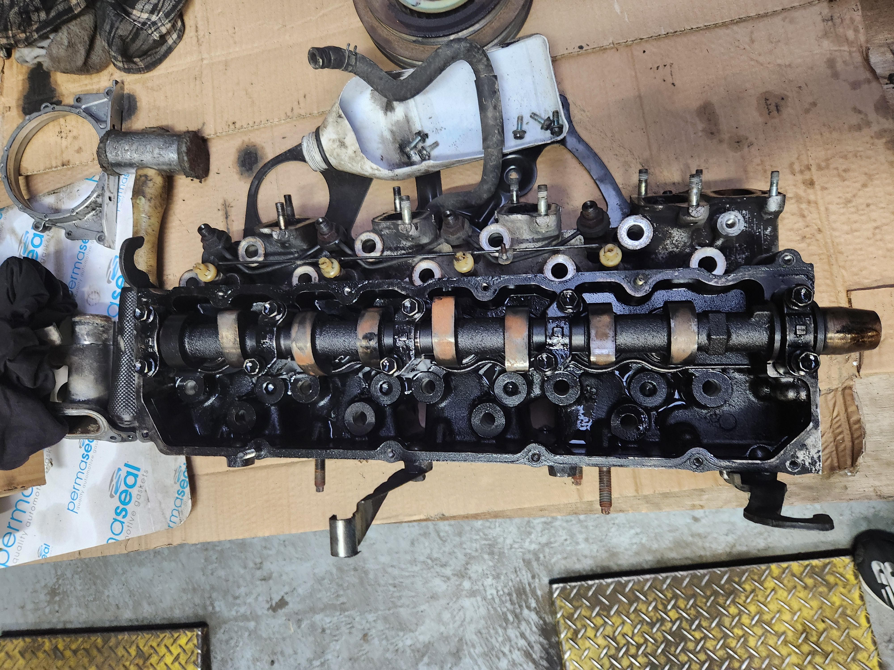

I assisted in disassembling a 1KZ engine with my friend and learned practical aspects of engine mechanics. This included adjusting engine efficiency or torque by adding or removing components like injectors, adjusting camshaft timing, and eliminating EGR (Exhaust Gas Recirculation), among other techniques. The engine was later upgraded with a Mazda injector to enhance both efficiency and torque. This experience provided me with valuable workshop skills, a deeper understanding of thermodynamics, and insights into engine components.
During the disassembly process (shown below), I gained valuable insights into the functions of engine components such as the Crankshaft, Camshaft, injectors, and various other parts. I learned how these components work together to drive engine performance and efficiency, understanding their roles in the combustion process. Assessing their wear and tear during disassembly provided a deeper understanding of their durability under different operating conditions and potential issues that could affect engine performance. Additionally, evaluating their quality allowed me to appreciate the importance of component reliability and adherence to manufacturing standards for ensuring engine longevity and optimal performance. This hands-on experience not only enhanced my mechanical knowledge but also sharpened my skills in diagnosing and maintaining engines effectively, preparing me for future challenges in automotive engineering and maintenance.

Assembling the engine made me realize the complexity of each component, requiring precise torques to tighten bolts, accurate alignment of cylinders, timing of injectors, and careful attention to prevent dirt from contaminating lubricated bearings and other critical areas. This hands-on experience underscored the importance of meticulous attention to detail and adherence to manufacturer specifications to ensure the engine operates smoothly and efficiently. It gave me a perspective and understanding of mechanics, highlighting the importance of designing for repairability comparing to modern vehicles that are often challenging to repair due to extensive electronic systems and complex assemblies, sometimes requiring specialized tools.